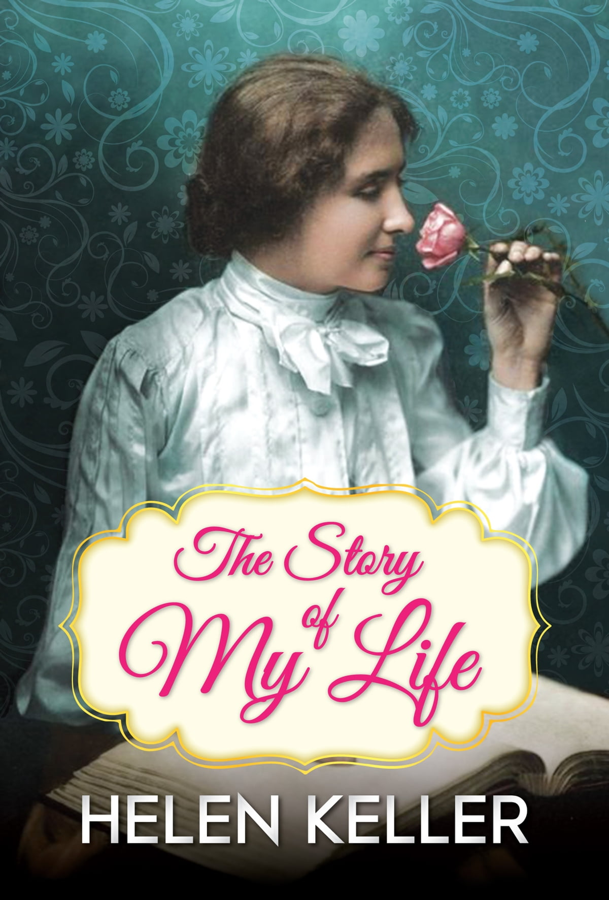

Helen Adams Keller
How is it possible that a woman who was blind and deaf from the age of 1 1/2 can be so full of encouragement and love of life? How is it that we who don't suffer her afflictions don't see life in as positive a light as she did? Her beautiful words and motivational perspective are hard to match, and her love of life shines as a model for us all. If I can feel half as positive about life as her words speak, I'll be a very happy person indeed. Thank you, Helen.

The Story of My Life by Helen Keller
Here's a time-line of Helen Keller's life:
- 1880 - Helen Keller is born in Tuscumbia, Alabama on June 27.
- 1882 - In February, Keller contracts scarlet fever or meningitis and becomes deaf and blind at the age of 19 months.
- 1886 - Keller and her parents meet Alexander Graham Bell in July for guidance about how to communicate with and educate Helen.
- 1887 - In January, Helen Keller’s father, Captain Arthur Keller, writes a letter to Perkins Director Michael Anagnos about employing a teacher for his daughter. Read the letter on the Internet Archive. On March 3, Anne Sullivan, a graduate of Perkins School for the Blind who is visually impaired, arrives in Tuscumbia, Alabama, to begin teaching Keller. On April 5, Keller feels water from a water pump as Sullivan fingerspells “W-A-T-E-R” into her hand and realizes that objects have names. Sullivan wrote, “A new light came into her face… Within hours, she had learned thirty new vocabulary words.”
- 1888 - In September, Sullivan brings Keller to Perkins to further her education and to meet other children who are blind and deafblind.
- 1891 - Keller writes “Frost King,” a short story, as a gift to Director Michael Anagnos for his birthday. The short story is published in The Mentor resulting in controversy. Read a Perkins Archives blog post about the incident.
- 1894-96 - Keller attends the Wright-Humason School in New York City. Meets Mark Twain for the first time; they remain friends for the rest of Twain’s life. Keller enters the Cambridge School for Young Ladies under the tutelage of Arthur Gilman. View the Helen Keller and Arthur Gilman Collection from the Perkins Archives on the Internet Archive. Keller’s father, Captain Arthur Keller dies.
- 1900 - Keller begins her studies at Radcliffe College (now part of Harvard University) in September. Read a Perkins Archives blog post about Keller’s college entrance exams.
- 1903 - The Story of My Life, Keller’s autobiography and her first book, is published. Read or listen to the book online.
- 1904-06 - Graduates cum laude from Radcliffe, becoming the first person who is deafblind to earn a college degree. Keller purchases a home in Wrentham, Massachusetts. On May 3, Anne Sullivan marries John Macy, who joins the Wrentham household. (They separate in 1914.) Keller is appointed to the Massachusetts Commission for the Blind.
- 1908 - Keller’s book, The World I Live In, is published. Read or listen to the book online.
- 1914-18 - Polly Thomson joins the household as a secretary, beginning her 46 years of service to Keller. Read a Perkins Archives blog post about Polly Thomson. Co-founds American Foundation for Overseas Blind to support World War I veterans who were blinded in the war. (Later becomes Helen Keller International.) Keller falls in love with and plans to elope with Peter Fagan, but her family objects and prevents the marriage. Keller, Sullivan, and Thomson move the household to Forest Hills, located on Long Island in New York. Braille is established as the single writing system in the United States for people who were blind, due in part to the advocacy of Helen Keller.
- 1919 - Assisted by Sullivan, Keller begins a successful five-year carer on the vaudeville circuit. Read a blog post about Keller’s vaudeville performances.
- 1920 - Keller helps found the American Civil Liberties Union (ACLU).
- 1921 - Keller’s mother, Kate Keller, dies.
- 1919-1924 - Keller lectures and tours all over the United States while her fame worldwide increases.
- 1924 - Begins work as the public spokesperson for the American Foundation for the Blind. She continues this work for the rest of her life.
- 1925 - In an address to the Lions Club International, Keller challenges them to become “Knights of the Blind.”
- 1927 - Keller’s book, My Religion, is published.
- 1929 - Keller’s book, Midstream: My Later Life, is published. Read the book online.
- 1936 - Anne Sullivan Macy, Keller’s “Teacher”, and companion dies on October 20. Browse a collection of condolence messages received by Keller on Flickr.
- 1937 - Visits Japan for the first time.
- 1938 - Keller’s book, Helen Keller’s Journal, 1936-1937, is published.
- 1938 - Meets First Lady Eleanor Roosevelt, who remains a friend for many years. Browse photos from the visit on Flickr.
- 1939 - Moves to Arcan Ridge in Easton Connecticut, where she lives for the rest of her life. View a picture of the house on Flickr.
- 1943-1946 - Visits wounded and blinded war veterans in military hospitals, providing support and encouragement.
- 1946 - Begins a series of world tours that took her to 35 countries in 11 years. She advocates on behalf of people with disabilities, inspiring many governments to establish schools for students who are blind and deaf.
- 1946 - Begins touring on behalf of the American Foundation for Overseas Blind.
- 1948 - Keller returns to Japan, visiting over thirty cities. Her civil diplomacy on this trip is credited with improving U.S. and Japanese relations at the end of World War II.
- 1952 - Keller receives the Gold Medal award from The National Institute of Social Sciences for her service to humanity.
- 1954 - Ivy Green, the house where Helen Keller was born, is restored and becomes a National Historic Landmark.
- 1955 - Keller wins an Oscar for Helen Keller in Her Story, a documentary about her life, directed by Nancy Hamilton. View the film on YouTube.
- 1955 - Keller’s book, Teacher – Anne Sullivan Macy, is published.
- 1956 - The Miracle Worker (William Gibson) debuts on Broadway, with Patty Duke as Helen Keller and Anne Bancroft as Anne Sullivan.
- 1960 - Meets with President John F. Kennedy, the tenth and the last United States President she met.
- 1961 - Keller suffers from a stroke and retires from public appearances and work.
- 1964 - Awarded the Presidential Medal of Freedom by President Lyndon B. Johnson.
- 1965 - Visitors to the New York World’s Fair elected Keller to be one of twenty inductees into the Women’s Hall of Fame, tying with Eleanor Roosevelt for the most votes.
- 1968 - Keller dies on June 1, a few weeks before her 88th birthday, at Arcan Ridge.
- 1968 - On June 5, Keller’s memorial service in the National Cathedral is attended by 1,200 mourners, and the choral music is performed by the choir of Perkins School for the Blind.
- 1973 - Keller is inducted into the National Women’s Hall of Fame.
- 1980 - The United States Postal Service issues a stamp depicting Keller and Sullivan to commemorate the centennial of Keller’s births. View a collection of the stamp on Flickr.
- 1984 - The Miracle Continues, a TV movie about Keller’s college years and early adult life is aired.
- 1999 - More than 30 years after her death, Keller is listed as one of the most important figures of the 20th century on Time Magazine’s 100 list.
- 2003 - Keller is honored on the Alabama state quarter.
- 2009 - A bronze statue of Keller is added to the National Statuary Hall Collection.
- 2021 - Mattel includes Keller in their Barbie® Inspiring Women™ collection. The doll’s packaging includes braille and was designed in partnership with the National Federation of the Blind.
Stars in the silent film, Deliverance, about her life. Watch the film online from the Library of Congress.
"The best and most beautiful things in the world cannot be seen or even touched - they must be felt with the heart." — Helen Adams Keller